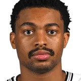

His best final NBA finish was #4 of 30, with the 2018-19 Portland Trail Blazers. In his 399 games for 3 teams over 8 seasons they went 195–204 (48.9%), −9 games under .500, with an average final finish of 18.4.
Jump to: Record by opponent · Season by season · Teammate help
Compare Zach Collins with…
Suggested, same era and similar teammate help:


Final NBA finish, season by season
Title Finals Other playoffs Missed playoffs. #1 = champion; the dashed line is last place that season. Each point opens that season's final standings.
All 30 teams ranked in 2018-19, his best finish (#4)Teammate help
 Damian Lillard13.03 seasons
Damian Lillard13.03 seasons Victor Wembanyama2.82 seasons
Victor Wembanyama2.82 seasons Dejounte Murray1.01 season
Dejounte Murray1.01 season
Career
Career records (W–L, W − L, with and without) include 2026-27 games through Nov. 23, 2026; season counts and finishes are through 2025-26. Each card opens its board in the same scope. How we count.

Latest completed seasons
- 2025-26·
 Chicago·#22 of 3031–51 · Missed playoffs
Chicago·#22 of 3031–51 · Missed playoffs - 2024-25·
 San Antonio·#23 of 3034–48 · Missed playoffs
San Antonio·#23 of 3034–48 · Missed playoffs - 2023-24·San Antonio·#26 of 3022–60 · Missed playoffs
2026-27 so far
Games through Nov. 23, 2026, the last game in the nightly data. These games are already in his career records above (W–L, win %, W − L, with and without, all marked "incl. 2026-27"). Season counts, final finishes and teammate help use completed seasons through 2025-26; 2026-27 joins them when the season ends.
| Team | His games | With him | Without him | Gap | On/off per 100 | Started / bench | Close games |
|---|---|---|---|---|---|---|---|
| 11 | 2–9 18.2% | 3–3 50.0% | −31.8 | −3.3 | 1–0 / 1–9 | 0–1 |
Season by season
Newest first; every header sorts. Final NBA finish is the team's rank among all teams that season (#1 = champion) and opens that season's standings. "Without him" uses the team-season window; the span line counts only the games between his first and last game for the team. The 2026-27 (to date) row counts games through Nov. 23, 2026; its final finish and playoffs are in progress.
| 2026-27 (to date) | In progress | 5–12 29.4% | In progress | 11 of 17 | 2–9 18.2% | 3–3 50.0%span: 2–3, gap −21.8 | −31.8 | |
| 2025-26 | #22 of 30 | 31–51 37.8% | Missed playoffs | 10 of 82 | 6–4 60.0% | 25–47 34.7%span: N/A, gap N/A | +25.3 | |
| 2024-25 | #23 of 30 | 34–48 41.5% | Missed playoffs | 36 of 82 | 17–19 47.2% | 6–9 40.0%span: 4–6, gap +7.2 | +7.2 | |
| 2024-25 | #19 of 30 | 39–43 47.6% | Missed playoffs | 28 of 82 | 17–11 60.7% | 1–4 20.0%span: 0–1, gap +60.7 | +40.7 | |
| 2023-24 | #26 of 30 | 22–60 26.8% | Missed playoffs | 69 of 82 | 19–50 27.5% | 3–10 23.1%span: 3–10, gap +4.5 | +4.5 | |
| 2022-23 | #28 of 30 | 22–60 26.8% | Missed playoffs | 63 of 82 | 20–43 31.7% | 2–17 10.5%span: 1–16, gap +25.9 | +21.2 | |
| 2021-22 | #20 of 30 | 34–48 41.5% | Lost in play-in | 28 of 82 | 14–14 50.0% | 20–34 37.0%span: 1–0, gap −50.0 | +13.0 | |
| 2019-20 | #15 of 30 | 35–39 47.3% | Lost 1st round 1–4 | 11 of 74 | 8–3 72.7% | 27–36 42.9%span: 27–36, gap +29.9 | +29.9 | |
| 2018-19 | #4 of 30 | 53–29 64.6% | Lost conf finals 0–4 | 77 of 82 | 51–26 66.2% | 2–3 40.0%span: 2–3, gap +26.2 | +26.2 | |
| 2017-18 | #9 of 30 | 49–33 59.8% | Lost 1st round 0–4 | 66 of 82 | 41–25 62.1% | 8–8 50.0%span: 7–8, gap +15.5 | +12.1 |
On/off, starts and close games
From the lineup data, 1996-97 on, incl. 2026-27 through Nov. 23, 2026. On/off is net points per 100 possessions with him on the floor minus off, a different unit from the win-rate gaps. Started and off the bench are team records in those games; close games are those within 5 points in the last 5 minutes with him on the floor.
| 2026-27 (to date) | −3.3 | 1–0 100.0% | 1–9 10.0% | 0–1 0.0% | |
| 2025-26 | +12.2 | N/A | 6–4 60.0% | 3–1 75.0% | |
| 2024-25 | −11.9 | 2–2 50.0% | 15–17 46.9% | N/A | |
| 2024-25 | +1.9 | 5–3 62.5% | 12–8 60.0% | 3–2 60.0% | |
| 2023-24 | −9.8 | 6–23 20.7% | 13–27 32.5% | 5–12 29.4% | |
| 2022-23 | +0.5 | 10–16 38.5% | 10–27 27.0% | 8–8 50.0% | |
| 2021-22 | +4.3 | 1–3 25.0% | 13–11 54.2% | 2–2 50.0% | |
| 2019-20 | +8.7 | 8–3 72.7% | N/A | 3–3 50.0% | |
| 2018-19 | −6.8 | N/A | 51–26 66.2% | 5–2 71.4% | |
| 2017-18 | −1.7 | 1–0 100.0% | 40–25 61.5% | 3–1 75.0% |
Teammate help by season
Two separate numbers per season, each with every teammate that adds to it. Help this season = Teammates Score points for honors won that season by teammates who shared a game with him. Help coming in = the same teammates' honors from the season before. How help works.
- 2026-27ChicagoHelp this season: pending (honors are awarded after the season)
Help coming in (2025-26 honors of teammates he has played with so far): 1 = 1 Norman Powell
- 2025-26ChicagoHelp this season: 0, no honored teammate
More: help coming in
Help coming in (teammates' honors the season before): 0.125 = 0.125 Matas Buzelis
- 2024-25San Antonio
Victor Wembanyama All-Star130 g
 Stephon Castle ROYAll-Rookie 1st0.7536 g
Stephon Castle ROYAll-Rookie 1st0.7536 g
Help this season: 1.75 = 1 Victor Wembanyama + 0.75 Stephon Castle
More: help coming in and other teammates
Help coming in (teammates' honors the season before): 1.75 = 1.75 Victor Wembanyama
Other teammates (no honors that season): Harrison Barnes 36 g, Julian Champagnie 36 g, Chris Paul 36 g, Keldon Johnson 35 g, Blake Wesley 27 g, Malaki Branham 26 g, Sandro Mamukelashvili 26 g, Charles Bassey 24 g, Devin Vassell 21 g, Tre Jones 20 g, Jeremy Sochan 18 g, Sidy Cissoko 15 g, Riley Minix 1 g, Harrison Ingram 1 g and 1 more
- 2024-25Chicago
 Matas Buzelis All-Rookie 2nd0.12528 g
Matas Buzelis All-Rookie 2nd0.12528 g
Help this season: 0.125 = 0.125 Matas Buzelis
More: help coming in and other teammates
Help coming in (teammates' honors the season before): 0
Other teammates (no honors that season): Julian Phillips 27 g, Coby White 27 g, Dalen Terry 25 g, Kevin Huerter 24 g, Nikola Vucevic 20 g, Josh Giddey 20 g, Patrick Williams 19 g, Talen Horton-Tucker 18 g, Tre Jones 16 g, Jalen Smith 15 g, Jevon Carter 11 g, Jahmir Young 6 g, Emanuel Miller 6 g, EJ Liddell 6 g and 2 more
- 2023-24San Antonio
Victor Wembanyama All-Def 1stROYAll-Rookie 1st1.7559 g
Help this season: 1.75 = 1.75 Victor Wembanyama
More: help coming in and other teammates
Help coming in (teammates' honors the season before): 0.125 = 0.125 Jeremy Sochan
Other teammates (no honors that season): Malaki Branham 65 g, Tre Jones 64 g, Jeremy Sochan 61 g, Julian Champagnie 61 g, Cedi Osman 59 g, Keldon Johnson 58 g, Devin Vassell 55 g, Blake Wesley 48 g, Sandro Mamukelashvili 38 g, Doug McDermott 37 g, Dominick Barlow 20 g, Devonte Graham 20 g, Charles Bassey 19 g, Sidy Cissoko 11 g and 3 more
- 2022-23San Antonio
 Jeremy Sochan All-Rookie 2nd0.12545 g
Jeremy Sochan All-Rookie 2nd0.12545 g
Help this season: 0.125 = 0.125 Jeremy Sochan
More: help coming in and other teammates
Help coming in (teammates' honors the season before): 0
Other teammates (no honors that season): Malaki Branham 54 g, Tre Jones 51 g, Doug McDermott 50 g, Keita Bates-Diop 50 g, Keldon Johnson 49 g, Jakob Poeltl 37 g, Romeo Langford 36 g, Isaiah Roby 32 g, Josh Richardson 32 g, Blake Wesley 29 g, Stanley Johnson 29 g, Devin Vassell 27 g, Charles Bassey 24 g, Gorgui Dieng 18 g and 7 more
- 2021-22San Antonio
Dejounte Murray All-Star121 g
Help this season: 1 = 1 Dejounte Murray
More: help coming in and other teammates
Help coming in (teammates' honors the season before): 0
Other teammates (no honors that season): Tre Jones 26 g, Josh Primo 25 g, Devin Vassell 25 g, Keldon Johnson 25 g, Jakob Poeltl 24 g, Josh Richardson 21 g, Jock Landale 20 g, Lonnie Walker 20 g, Keita Bates-Diop 19 g, Joe Wieskamp 15 g, Doug McDermott 13 g, Devontae Cacok 6 g, Romeo Langford 4 g, Derrick White 2 g and 3 more
- 2019-20
 Portland
Damian Lillard All-NBA 2ndAll-Star411 g
Portland
Damian Lillard All-NBA 2ndAll-Star411 g
Help this season: 4 = 4 Damian Lillard
More: help coming in and other teammates
Help coming in (teammates' honors the season before): 4 = 4 Damian Lillard
Other teammates (no honors that season): CJ McCollum 11 g, Hassan Whiteside 9 g, Gary Trent Jr 9 g, Mario Hezonja 9 g, Carmelo Anthony 8 g, Jusuf Nurkic 8 g, Anfernee Simons 8 g, Rodney Hood 3 g, Kent Bazemore 3 g, Anthony Tolliver 3 g, Skal Labissiere 3 g, Wenyen Gabriel 2 g, Nassir Little 1 g
- 2018-19Portland
Damian Lillard All-NBA 2ndAll-Star475 g
Help this season: 4 = 4 Damian Lillard
More: help coming in and other teammates
Help coming in (teammates' honors the season before): 5 = 5 Damian Lillard
Other teammates (no honors that season): Al-Farouq Aminu 76 g, Evan Turner 70 g, Seth Curry 69 g, Jusuf Nurkic 67 g, Jake Layman 66 g, CJ McCollum 65 g, Meyers Leonard 60 g, Moe Harkless 55 g, Nik Stauskas 44 g, Rodney Hood 22 g, Anfernee Simons 20 g, Enes Kanter 18 g, Caleb Swanigan 18 g, Wade Baldwin 16 g and 2 more
- 2017-18Portland
Damian Lillard All-NBA 1stAll-Star557 g
Help this season: 5 = 5 Damian Lillard
More: help coming in and other teammates
Help coming in (teammates' honors the season before): 0
Other teammates (no honors that season): CJ McCollum 66 g, Pat Connaughton 66 g, Jusuf Nurkic 63 g, Evan Turner 63 g, Ed Davis 62 g, Al-Farouq Aminu 62 g, Shabazz Napier 60 g, Moe Harkless 43 g, Jake Layman 29 g, Meyers Leonard 28 g, Noah Vonleh 22 g, Caleb Swanigan 19 g, Wade Baldwin 7 g, Georgios Papagiannis 1 g
Record against each opponent
- Best regular-season record against one franchise: 12–8 (60.0%) against the Utah Jazz in 20 games.
- Toughest regular-season record against one franchise: 8–12 (40.0%) against the Denver Nuggets in 20 games.
Regular season, incl. 2026-27 through Nov. 23, 2026: 399 games, 195–204, against 30 franchises.
Grouped by franchise (named as today); game lists keep each team's name that season. Filters and the tab are kept in the URL, so a filtered view can be shared.
| Games list | |||||||
|---|---|---|---|---|---|---|---|
| 21 | 9–12 | 42.9% | −3 | N/A | 2017-18 to 2024-25 | ||
| 20 | 8–12 | 40.0% | −4 | 1–0 (4–3 in games) | 2017-18 to 2026-27 | ||
| 20 | 12–8 | 60.0% | +4 | N/A | 2017-18 to 2024-25 | ||
| 19 | 10–9 | 52.6% | +1 | N/A | 2017-18 to 2024-25 | ||
| 19 | 9–10 | 47.4% | −1 | N/A | 2017-18 to 2026-27 | ||
| 18 | 6–12 | 33.3% | −6 | N/A | 2017-18 to 2024-25 | ||
| 18 | 7–11 | 38.9% | −4 | 1–0 (4–1 in games) | 2017-18 to 2024-25 | ||
| 18 | 10–8 | 55.6% | +2 | N/A | 2017-18 to 2024-25 | ||
| 17 | 7–10 | 41.2% | −3 | N/A | 2017-18 to 2024-25 | ||
| 16 | 7–9 | 43.8% | −2 | 0–1 (0–4 in games) | 2017-18 to 2025-26 | ||
| 15 | 5–10 | 33.3% | −5 | N/A | 2017-18 to 2024-25 | ||
| 15 | 7–8 | 46.7% | −1 | 0–1 (0–4 in games) | 2017-18 to 2025-26 | ||
| 15 | 9–6 | 60.0% | +3 | N/A | 2017-18 to 2024-25 | ||
| 14 | 9–5 | 64.3% | +4 | N/A | 2017-18 to 2025-26 | ||
| 13 | 5–8 | 38.5% | −3 | N/A | 2017-18 to 2024-25 | ||
| 13 | 8–5 | 61.5% | +3 | N/A | 2017-18 to 2026-27 | ||
| 12 | 6–6 | 50.0% | 0 | N/A | 2017-18 to 2025-26 | ||
| 11 | 4–7 | 36.4% | −3 | N/A | 2017-18 to 2026-27 | ||
| 10 | 7–3 | 70.0% | +4 | N/A | 2017-18 to 2025-26 | ||
| 10 | 6–4 | 60.0% | +2 | N/A | 2017-18 to 2025-26 | ||
| 10 | 5–5 | 50.0% | 0 | N/A | 2017-18 to 2024-25 | ||
| 10 | 8–2 | 80.0% | +6 | N/A | 2021-22 to 2024-25 | ||
| 10 | 5–5 | 50.0% | 0 | N/A | 2017-18 to 2026-27 | ||
| 9 | 5–4 | 55.6% | +1 | N/A | 2017-18 to 2026-27 | ||
| 8 | 1–7 | 12.5% | −6 | N/A | 2017-18 to 2026-27 | ||
| 8 | 6–2 | 75.0% | +4 | N/A | 2018-19 to 2026-27 | ||
| 8 | 4–4 | 50.0% | 0 | N/A | 2017-18 to 2024-25 | ||
| 8 | 2–6 | 25.0% | −4 | N/A | 2017-18 to 2025-26 | ||
| 7 | 5–2 | 71.4% | +3 | N/A | 2017-18 to 2024-25 | ||
| 7 | 3–4 | 42.9% | −1 | N/A | 2017-18 to 2026-27 |
Rows add up to his career record in his games. A playoff series counts when he played in it; early round-robin games show as games only. How we count.
Playoffs, with and without him
| 2018-19 | Lost in the conference finals 0–4 to | #4 of 30 | 16 of 16 | 8–8 50.0% | |
| 2017-18 | Lost in the first round 0–4 to | #9 of 30 | 4 of 4 | 0–4 0.0% |
He played every playoff game for these teams, so there is no "without him" record.
Arrival and departure
Team wins per 82 games the season before he arrived vs his first season there, and his last season vs the season after he left. He leaves a team only when his next season with games is for another team (or he never plays again); whole seasons he missed and came back from are one "Missed" row with the team's record without him. Per 82 so short seasons compare fairly. These are team records, not a measure of what he did.
| Left | after 2024-25 | 2024-25: 34–48 34.0 per 82 | 2025-26: 62–20 62.0 per 82 without him | +28.0 wins | |
| Arrived | 2024-25 | 2023-24: 39–43 39.0 per 82 | 2024-25: 39–43 39.0 per 82 | +0.0 wins | |
| Arrived | 2021-22 | 2020-21: 33–39 37.6 per 82 | 2021-22: 34–48 34.0 per 82 | −3.6 wins | |
| Left | after 2019-20 | 2019-20: 35–39 38.8 per 82 | 2020-21: 42–30 47.8 per 82 without him | +9.0 wins | |
| Debut | 2017-18 | 2016-17: 41–41 41.0 per 82 | 2017-18: 49–33 49.0 per 82 | +8.0 wins |
Seasons split between teams
Each team's record before his first game for it, inside his window (games with and without him) and after his last game, in the seasons he played for two or more teams.
| 2024-25 | Oct. 24, 2024 to Feb. 1, 2025 | N/A | 23–28 45.1% | 11–20 35.5% | 36 | |
| 2024-25 | Feb. 11, 2025 to April 13, 2025 | 21–28 42.9% | 18–15 54.5% | N/A | 28 |
Best duos
Team record in regular-season games both played, top 10 by win %, at least 50 games together, incl. 2026-27 through Nov. 23, 2026.
 Seth Curry
47–22 68.1%
Seth Curry
47–22 68.1%- Damian Lillard
93–50 65.0%
 Shabazz Napier
39–21 65.0%
Shabazz Napier
39–21 65.0% Evan Turner
86–47 64.7%
Evan Turner
86–47 64.7% Ed Davis
40–22 64.5%
Ed Davis
40–22 64.5% Jusuf Nurkic
89–49 64.5%
Jusuf Nurkic
89–49 64.5% Moe Harkless
63–35 64.3%
Moe Harkless
63–35 64.3% Jake Layman
61–34 64.2%
Jake Layman
61–34 64.2% Al-Farouq Aminu
88–50 63.8%
Al-Farouq Aminu
88–50 63.8% CJ McCollum
90–52 63.4%
CJ McCollum
90–52 63.4%
With and without his teammates
His 12 teammates with the most regular-season games together. "Together" is the team's record in the games both played for it; "Without him" is the team's record in the games Zach Collins played for that team while the teammate was on it (between the teammate's first and last game for the team, the appearance span) and the teammate did not play. Fewer than 20 games without him: no gap. Games through Nov. 23, 2026. How we count.
 Tre JonesSan Antonio 2021-22 to 2024-25; Chicago 2024-25 to 2026-27
Tre JonesSan Antonio 2021-22 to 2024-25; Chicago 2024-25 to 2026-27- Together
- 75–121 38.3%
- Without him
- 11–26 29.7%
- Gap
- 8.5 points lower

Keldon JohnsonSan Antonio 2021-22 to 2024-25- Together
- 60–107 35.9%
- Without him
- 7–18 28.0%
- Gap
- 7.9 points lower
- Malaki BranhamSan Antonio 2022-23 to 2024-25
- Together
- 42–103 29.0%
- Without him
- 8–7 53.3%
- Gap
- Too few games without him
- Damian LillardPortland 2017-18 to 2019-20
- Together
- 93–50 65.0%
- Without him
- 6–4 60.0%
- Gap
- Too few games without him
- CJ McCollumPortland 2017-18 to 2019-20
- Together
- 90–52 63.4%
- Without him
- 9–2 81.8%
- Gap
- Too few games without him
- Jusuf NurkicPortland 2017-18 to 2019-20
- Together
- 89–49 64.5%
- Without him
- 2–2 50.0%
- Gap
- Too few games without him
- Al-Farouq AminuPortland 2017-18 to 2018-19
- Together
- 88–50 63.8%
- Without him
- 3–1 75.0%
- Gap
- Too few games without him
- Evan TurnerPortland 2017-18 to 2018-19
- Together
- 86–47 64.7%
- Without him
- 5–4 55.6%
- Gap
- Too few games without him
 Devin VassellSan Antonio 2021-22 to 2024-25
Devin VassellSan Antonio 2021-22 to 2024-25- Together
- 46–82 35.9%
- Without him
- 14–34 29.2%
- Gap
- 6.8 points lower
- Jeremy SochanSan Antonio 2022-23 to 2024-25
- Together
- 36–88 29.0%
- Without him
- 14–18 43.8%
- Gap
- 14.7 points higher
 Julian ChampagnieSan Antonio 2022-23 to 2024-25
Julian ChampagnieSan Antonio 2022-23 to 2024-25- Together
- 37–68 35.2%
- Without him
- 3–6 33.3%
- Gap
- Too few games without him
 Blake WesleySan Antonio 2022-23 to 2024-25
Blake WesleySan Antonio 2022-23 to 2024-25- Together
- 37–67 35.6%
- Without him
- 15–42 26.3%
- Gap
- 9.3 points lower